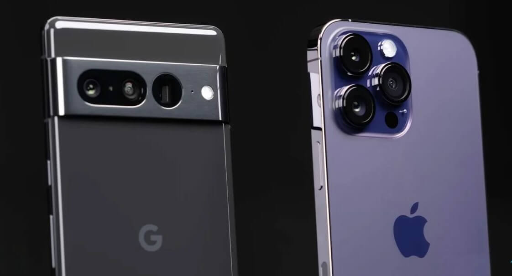

Google Pixel 7 Pro offer top performance, great cameras and exactly the same exclusive features.If we talk about the differences from the Google Pixel 6 Pro, then the new design of the back panel attracts attention, screen with increased (according to the manufacturer) brightness, new front camera and rear zoom module. And of course, a brand new Tensor G2 chip. He, however, did without radical improvements regarding predecessor: the same productive and energy-efficient cores, the same manufacturing process (5 nm), major changes affected only the cores of the middle link - now it's ARM Cortex-A78 instead of ARM Cortex-A76. We figured out the brief application, let's talk about the new smartphone in more detail.
Design, ergonomics and software
The general style of the seventh Pixel has not changed compared to the sixth. Front panel with minimal bezels around the screen and beveled edges, the front camera on which is placed in an individual hole in top of the screen. It is curious, however, that the bezels even slightly increased in comparison with the Pixel 6 Pro - the screen now occupies 88.7% of the front surface, while previously it was 88.9%.
Cameras, sensors and a flash on the back, just like last time, are located in the panel that stripes across it, is a brand name. True, the format of the strip and the grouping of lenses have slightly changed, which are on are located on it. The main and wide-angle cameras are combined into a common group, the telephoto camera is slightly separated from them. But this is striking because the panel is now painted not in black, but, depending on execution of the gadget, in gray, gold or silver. At the same time, the back itself is painted uniformly, Pixel no longer bicolor. To be honest, I liked the performance of the previous model more. Seventh "pixel" somehow bored.
We also note that Google did not particularly worry about the dimensions - and even made the Pixel 7 Pro heavier than the already hefty Pixel 6 Pro. The smartphone weighs 212 grams. Yes, this is a serious "shovel", as well as expected from a smartphone with a 6.7-inch screen. But, curiously, it is still lighter and Apple iPhone 14 Pro Max, and Samsung Galaxy S22 Ultra, and Xiaomi 12S Ultra. In its own way, this is an achievement, but the smartphone is still huge and not very convenient. However, these are the rules of the game today in the world of the most flagship flagships.
There are no questions about assembly and materials. Classic: a sandwich of glass panels with a "layer" in the form of aluminum frame. Glass is not simple, but tempered with the latest - Gorilla Glass Victus. Is not makes it less slippery - you can safely use the Pixel 7 Pro, packed in a case. It is bought separately - in the kit, of course, it is not. As there is almost nothing at all, including charger is another rule of the high society of smartphones today.
The functional elements are quite traditional, except that the power key is a bit unsettling, located above the long volume key, and not below it, as on the vast majority Android smartphones. There is no mini-jack, there are no “natural” stereo speakers (paired with the one located on the bottom verge works colloquial). But when you look at the top face, an unusual panel catches your eye, in which seems to be hidden. The first thought is that there is a retractable front camera, as it was fashionable for the year in 2018, is discarded - here it is, below, in the surface of the screen. But what is there? And there are additional 5G modem antennas are completely irrelevant for most readers of this review.
The fingerprint scanner is located in the surface of the screen. This is an optical sensor with moderate sensitivity. (the finger has to be held in the fingerprint recognition zone), but with good recognition stability fingerprint - it is almost not necessary to repeat touches. The scanner is located in a good place - enough high so that you do not have to intercept the smartphone in your hand when you reach for the sensor with your thumb. AND - Wow! — the function of face identification has been added, which has never been done on “pixels” before.
The selfie camera in the Google Pixel 7 Pro is quite simple - a single module, 10.8 megapixels, with ƒ / 2.2 aperture optics, without autofocus and flash. Filming is done at a resolution of 10 megapixels, and The "extra" resolution is used to create an option to switch between two focal lengths − standard and extended (0.7x). There is a portrait mode with background blur, but beautification again same no, as well as filters. At the same time, the quality of shooting is quite high - relative to the Pixel 6, progress significant, I can not compare with Pixel 6 Pro.
Google Pixel 7 Pro doesn't look like a standout in the flagship smartphone race: not the highest performance, a single slot for a SIM card (although this does not interfere with iPhone lovers), average autonomy with slow charging. Moreover, there is no charger in the kit, and the smartphone is capricious when choosing third-party adapters.
But why not get used to it? This is another very good Pixel, with great cameras, perfectly smooth working operating system and unusual design.